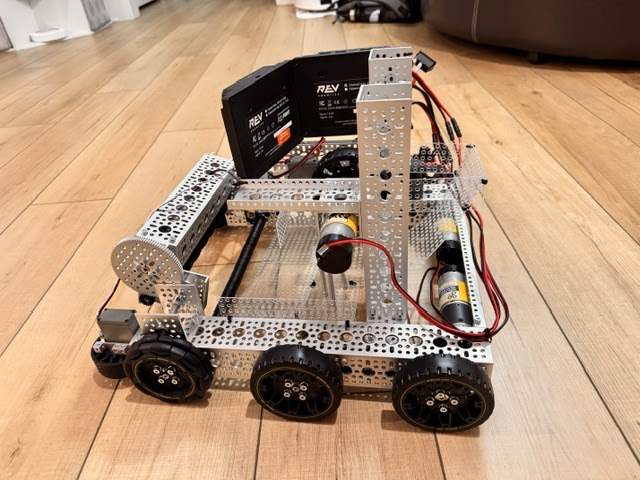
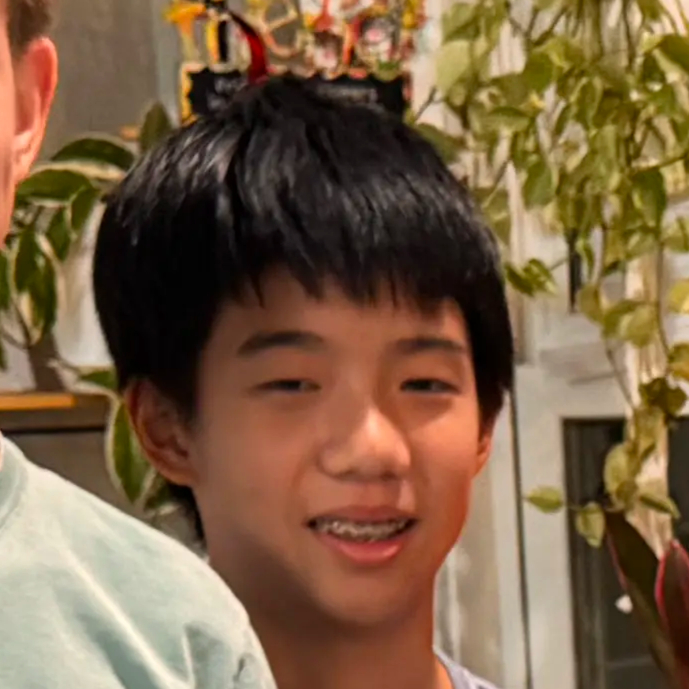
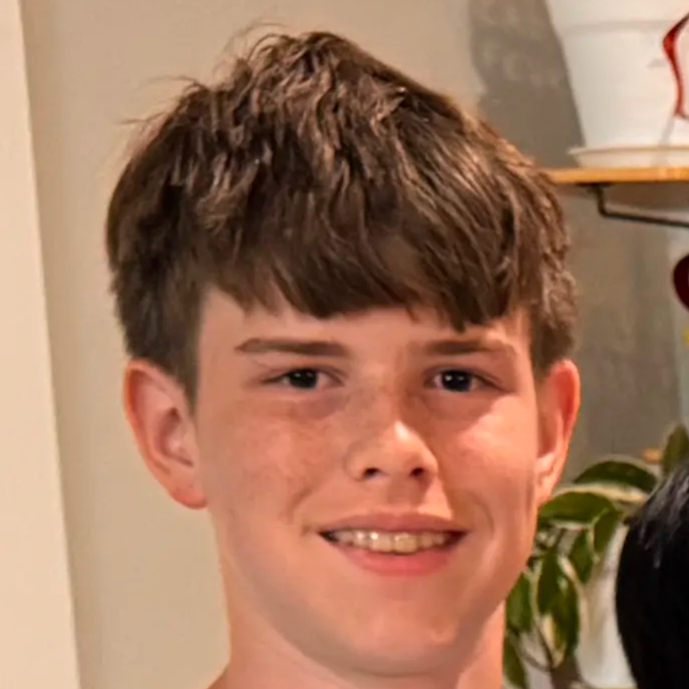
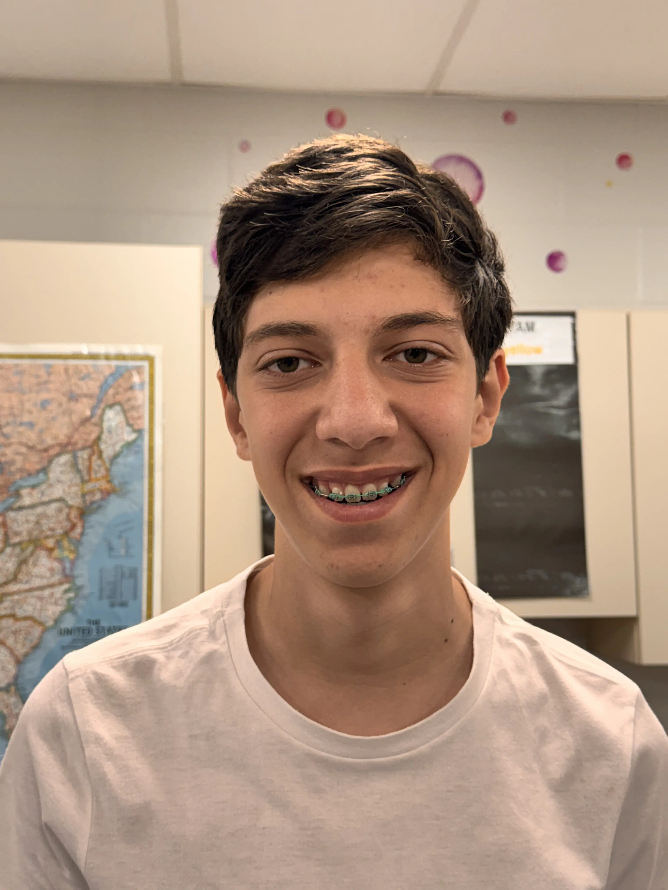

About Our Team
We are 2nd year a First Tech Challenge team made up completely of 8th graders from Sterling/Charles Townes Center in Greenville, SC. We combine our strengths in design, programming, and strategy through a rigorous process of brainstorming, testing, and refining. By making data-driven decisions and maintaining open communication, we ensure our mechanical and software goals remained aligned.


Mr. Servo Jr.
Mr. Servo Jr. is our robot for the 2026-2027 BIOBUZZ season. He is made with GoBilda parts and features 4 wheel mecanum drive. He uses an intake made of gecko wheels, and a flywheel shooter also made with a gecko wheel to adjust for the different size game elements in the 26-27 game. Mr. Servo Jr. is able to shoot pollen and nectar into the hives, as well as get them into the flowers to score more points.
Meet the Team

Aiden
Hover to read biobio

Taesan
Hover to read biobio

Andrew
Hover to read bioThis is my first year with the Sentient Servos, and I am super exited for this year's season. I have always enjoyed programming, and outside of robotics I enjoy playing violin.

Deep
Hover to read biobio

Charlie
Hover to read biobio

Parsa
Hover to read biobio